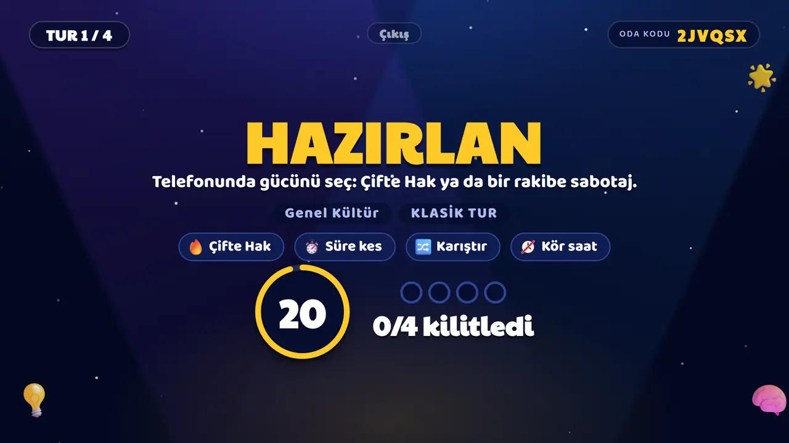
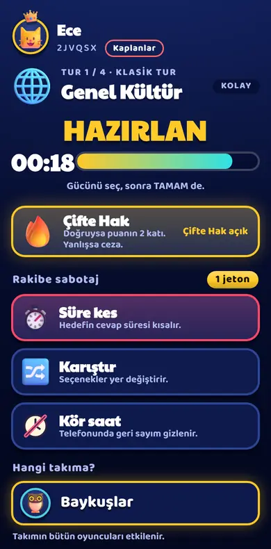

Basit mod
Kafe masaları ve ilk kez oynayanlar için. Kural açıklamak yerine oynarsın.
- Bahis yok. Güçler: 50/50 ve Çifte Hak.
- Üç sabotaj: Süre kes (rakibin süresini 6 saniye kısaltır), Karıştır (şıklar yer değiştirir), Kör saat (telefonda geri sayım görünmez).
- Soru başına tek, kısa Hazırlan ekranı (en çok 10 saniye); kimsenin kullanacak gücü yoksa hiç çıkmaz.
- Cevap süresi 30 saniye; mekan 10 ile 60 saniye arasında ayarlayabilir. Soru yalnızca TV'de yazar, telefon şıkları gösterir.

